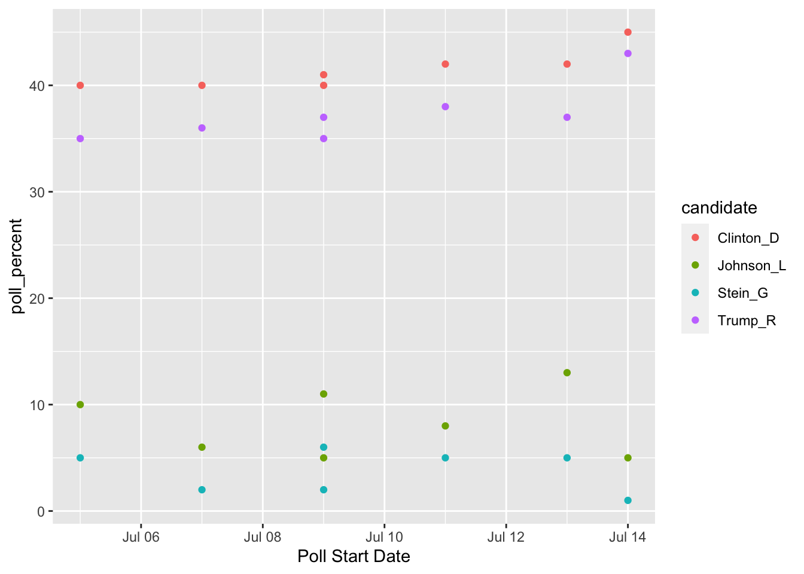
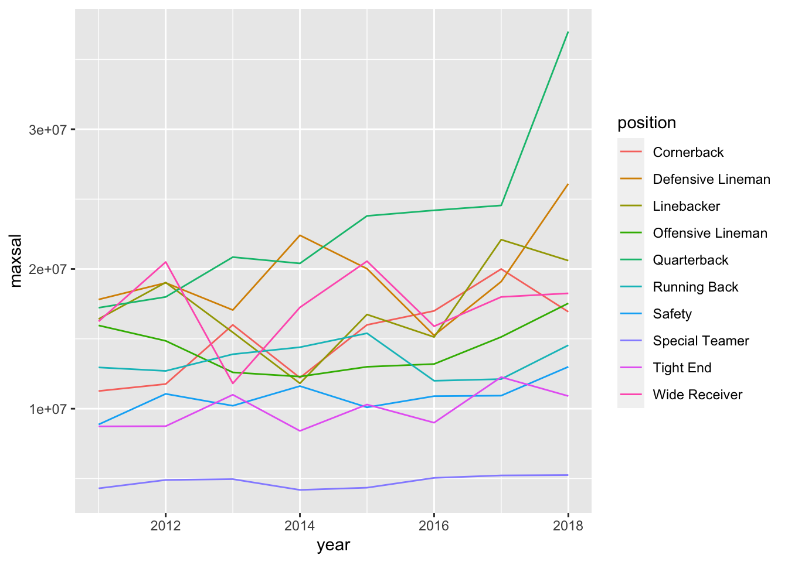
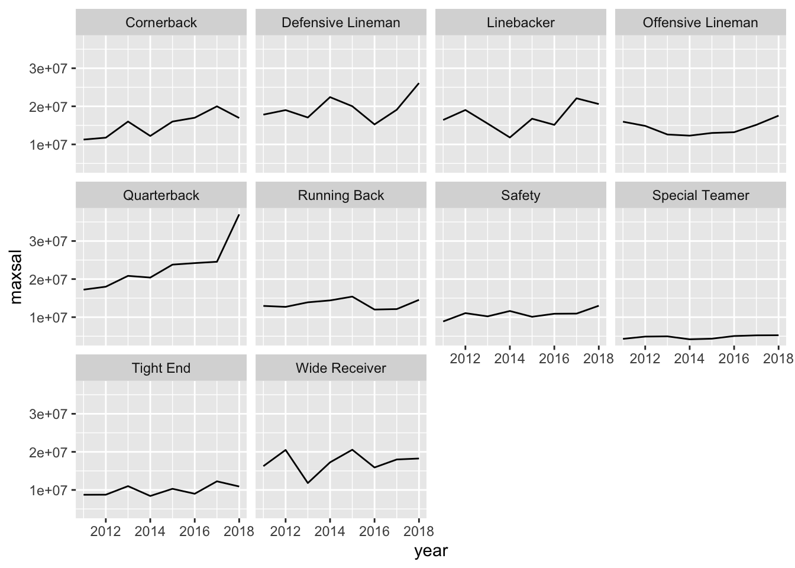
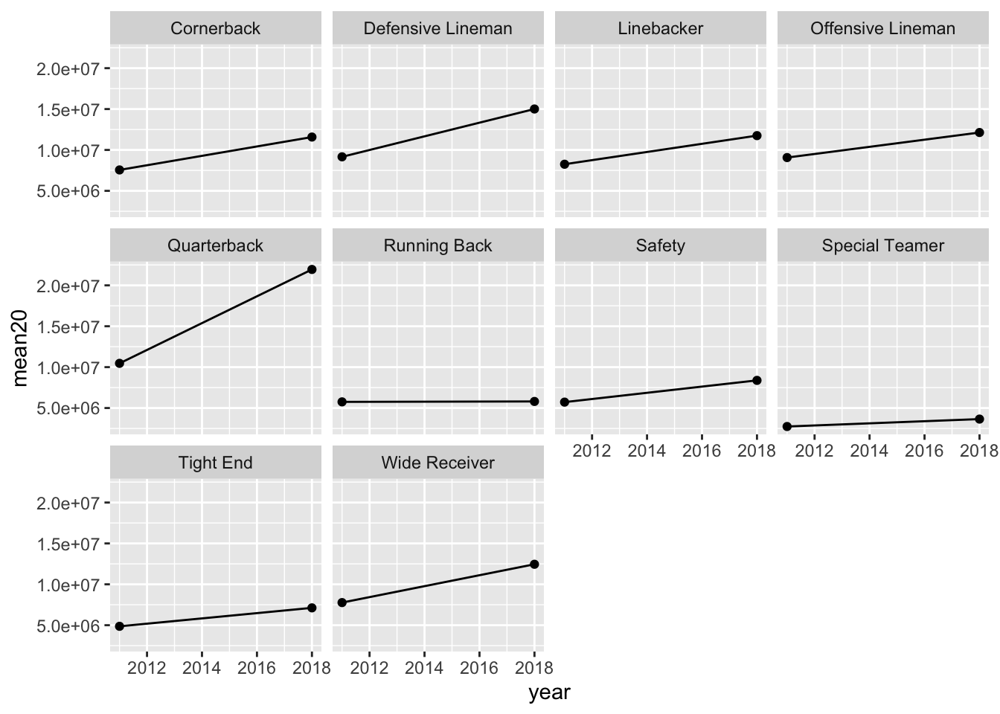

Chapter 5 Tidying with tidyr
Goals:
describe what it means for a data set to be tidy.
use
separate()andunite()to transform a data set into tidy form.use
pivot_longer()andpivot_wider()to transform a data set into tidy form.combine
tidyrfunctions withdplyrandggplot2functions to form a more complete workflow.
The Data: We will first use a polling data set that contains variables collected from a few different polls in July 2016 for the U.S. presidential election. The data set was scraped from RealClear politics https://www.realclearpolitics.com/epolls/latest_polls/president/ by Dr. Ramler. The variables are:
Poll, the name of the pollDate, the date range that the poll was conductedSample, contains the sample size of the poll and whether the poll was of Likely Voters or Registered VotersMoE, the margin of error of the poll (recall this term from IntroStat)Clinton (D), the percentage of people in the poll voting for ClintonTrump (R), the percentage of people in the poll voting for TrumpJohnson (L), the percentage of people in the poll voting for JohnsonSteing (G), the percentage of people in the poll voting for Stein
5.1 What is Tidy Data?
R usually (but not always) works best when your data is in tidy form. A tidy data set has a few characteristics. Note that you should already be quite familiar with tidy data because, up to this point, all of the data sets we have used in this class (and probably most of the data sets that you see in STAT 113 an all of the data sets that you may have seen in STAT 213) are tidy. This definition of tidy data is taken from R for Data Science:
- every variable in the data set is stored in its own column
- every case in the data set is stored in its own row
- each value of a variable is stored in one cell
- values in the data set should not contain units
- there should not be any table headers or footnotes
We will begin by focusing on the first characteristic: every variable in a the data set should be stored in its own column (and correspondingly, number 3: each value of a variable should be stored in one cell).
5.2 separate() and unite() Columns
In a fresh .Rmd file (File -> New File -> R Markdown) that is in your Notes project, copy and paste the following code into an R chunk:
library(tidyverse)
polls <- read_csv("data/rcp-polls.csv", na = "--")
polls## # A tibble: 7 x 8
## Poll Date Sample MoE `Clinton (D)` `Trump (R)` `Johnson (L)` `Stein (G)`
## <chr> <chr> <chr> <dbl> <dbl> <dbl> <dbl> <dbl>
## 1 Monmou… 7/14… 688 LV 3.7 45 43 5 1
## 2 CNN/ORC 7/13… 872 RV 3.5 42 37 13 5
## 3 ABC Ne… 7/11… 816 RV 4 42 38 8 5
## 4 NBC Ne… 7/9 … 1000 … 3.1 41 35 11 6
## 5 Econom… 7/9 … 932 RV 4.5 40 37 5 2
## 6 Associ… 7/7 … 837 RV NA 40 36 6 2
## 7 McClat… 7/5 … 1053 … 3 40 35 10 5Suppose that you wanted to know what the average sample size of the polls was. Using dplyr functions,
polls %>% summarise(meansample = mean(Sample))What warning do you get? Why?
You would get a similar warning (or sometimes an error) any time that you want to try to use Sample size in plotting or summaries. The issue is that the Sample column actually contains two variables so the data set is not tidy.
5.2.1 separate() a Column
Let’s separate() the two variables into Sample_size and Sample_type:
polls %>%
separate(col = Sample, into = c("Sample_size", "Sample_type"),
sep = " ")## # A tibble: 7 x 9
## Poll Date Sample_size Sample_type MoE `Clinton (D)` `Trump (R)`
## <chr> <chr> <chr> <chr> <dbl> <dbl> <dbl>
## 1 Monmouth 7/14 -… 688 LV 3.7 45 43
## 2 CNN/ORC 7/13 -… 872 RV 3.5 42 37
## 3 ABC News/Wash… 7/11 -… 816 RV 4 42 38
## 4 NBC News/Wall… 7/9 - … 1000 RV 3.1 41 35
## 5 Economist/You… 7/9 - … 932 RV 4.5 40 37
## 6 Associated Pr… 7/7 - … 837 RV NA 40 36
## 7 McClatchy/Mar… 7/5 - … 1053 RV 3 40 35
## # … with 2 more variables: Johnson (L) <dbl>, Stein (G) <dbl>The arguments to separate() are fairly easy to learn:
colis the name of the column in the data set you want to separate.intois the name of the new columns. These could be anything you want, and are entered in as a vector (withc()to separate the names)sepis the character that you want to separate the column by. In this case, the sample size and sample type were separated by whitespace, so oursep = " ", white space.
The sep argument is the newest piece of information here. Note that even using sep = "" will produce an error (there is not a space now, so R doesn’t know what to separate by).
polls %>%
separate(col = Sample, into = c("Sample_size", "Sample_type"),
sep = "")Similarly, we would like the Date column to be separated into a poll start date and a poll end date:
polls_sep <- polls %>%
separate(col = Date, into = c("Start", "End"),
sep = " - ")Why should you use " - " as the separator instead of "-"? Try using "-" if you aren’t sure: you shouldn’t get an error but something should look off.
What happened to Sample? Why is it back to its un-separated form?
5.2.2 unite() Columns
unite() is the “opposite” of separate(): use it when one variable is stored across multiple columns, but each row still represents a single case. The need to use unite() is less common than separate(). In our current data set, there is no need to use it at all. But, for the sake of seeing an example, let’s separate the Start date into month and day and then use unite() to re-unite those columns:
polls_sillytest <- polls_sep %>%
separate(col = Start, into = c("Start_month", "Start_day"),
sep = "/")
polls_sillytest## # A tibble: 7 x 10
## Poll Start_month Start_day End Sample MoE `Clinton (D)` `Trump (R)`
## <chr> <chr> <chr> <chr> <chr> <dbl> <dbl> <dbl>
## 1 Monmouth 7 14 7/16 688 LV 3.7 45 43
## 2 CNN/ORC 7 13 7/16 872 RV 3.5 42 37
## 3 ABC News/W… 7 11 7/14 816 RV 4 42 38
## 4 NBC News/W… 7 9 7/13 1000 … 3.1 41 35
## 5 Economist/… 7 9 7/11 932 RV 4.5 40 37
## 6 Associated… 7 7 7/11 837 RV NA 40 36
## 7 McClatchy/… 7 5 7/9 1053 … 3 40 35
## # … with 2 more variables: Johnson (L) <dbl>, Stein (G) <dbl>This situtation could occur in practice: the date variable is in multiple columns: one for month and one for day (and if there are multiple years, there could be a third for year). We would use unite() to combine these two columns into a single Date, called New_start_date:
polls_sillytest %>%
unite("New_start_date", c(Start_month, Start_day),
sep = "/")## # A tibble: 7 x 9
## Poll New_start_date End Sample MoE `Clinton (D)` `Trump (R)`
## <chr> <chr> <chr> <chr> <dbl> <dbl> <dbl>
## 1 Monmouth 7/14 7/16 688 LV 3.7 45 43
## 2 CNN/ORC 7/13 7/16 872 RV 3.5 42 37
## 3 ABC News/Wash Post 7/11 7/14 816 RV 4 42 38
## 4 NBC News/Wall St.… 7/9 7/13 1000 … 3.1 41 35
## 5 Economist/YouGov 7/9 7/11 932 RV 4.5 40 37
## 6 Associated Press-… 7/7 7/11 837 RV NA 40 36
## 7 McClatchy/Marist 7/5 7/9 1053 … 3 40 35
## # … with 2 more variables: Johnson (L) <dbl>, Stein (G) <dbl>Note how unite() just switches around the first two arguments of separate(). Argument 1 is now the name of the new column and Argument 2 is the names of columns in the data set that you want to combine.
We have also used the c() function in separate() and unite(). While c() is a very general R function and isn’t specific to tidy data, this is the first time that we’re seeing it in this course. c() officially stands for concatenate, but, in simpler terms, c() combines two or more “things,” separated by a comma.
c(1, 4, 2)## [1] 1 4 2c("A", "A", "D")## [1] "A" "A" "D"This is useful if a function argument expects two or more “things”: for example, in separate(), the into argument requires two column names for this example. Those column names must be specified by combining the names together with c().
5.2.3 Column Names and rename()
You might have noticed that the columns with percentage of votes for Clinton, Trump, etc. are surrounded by backticks ` ` when you print polls or polls_sep:
polls_sep## # A tibble: 7 x 9
## Poll Start End Sample MoE `Clinton (D)` `Trump (R)` `Johnson (L)`
## <chr> <chr> <chr> <chr> <dbl> <dbl> <dbl> <dbl>
## 1 Monmouth 7/14 7/16 688 LV 3.7 45 43 5
## 2 CNN/ORC 7/13 7/16 872 RV 3.5 42 37 13
## 3 ABC News/Was… 7/11 7/14 816 RV 4 42 38 8
## 4 NBC News/Wal… 7/9 7/13 1000 … 3.1 41 35 11
## 5 Economist/Yo… 7/9 7/11 932 RV 4.5 40 37 5
## 6 Associated P… 7/7 7/11 837 RV NA 40 36 6
## 7 McClatchy/Ma… 7/5 7/9 1053 … 3 40 35 10
## # … with 1 more variable: Stein (G) <dbl>This happens because the column names have a space in them (this also would occur if the columns started with a number or had odd special characters in them). Then, any time you want to reference a variable, you need the include the backticks:
polls_sep %>%
summarise(meanclinton = mean(Clinton (D))) ## throws an error
polls_sep %>%
summarise(meanclinton = mean(`Clinton (D)`)) ## backticks save the day!Having variable names with spaces doesn’t technically violate any principle of tidy data, but it can be quite annoying. Always using backticks can be a huge pain. We can rename variables easily with rename(), which just takes a series of new_name = old_name arguments.
polls_new <- polls_sep %>%
rename(Clinton_D = `Clinton (D)`, Trump_R = `Trump (R)`,
Johnson_L = `Johnson (L)`, Stein_G = `Stein (G)`)
polls_new## # A tibble: 7 x 9
## Poll Start End Sample MoE Clinton_D Trump_R Johnson_L Stein_G
## <chr> <chr> <chr> <chr> <dbl> <dbl> <dbl> <dbl> <dbl>
## 1 Monmouth 7/14 7/16 688 LV 3.7 45 43 5 1
## 2 CNN/ORC 7/13 7/16 872 RV 3.5 42 37 13 5
## 3 ABC News/Wash Po… 7/11 7/14 816 RV 4 42 38 8 5
## 4 NBC News/Wall St… 7/9 7/13 1000 … 3.1 41 35 11 6
## 5 Economist/YouGov 7/9 7/11 932 RV 4.5 40 37 5 2
## 6 Associated Press… 7/7 7/11 837 RV NA 40 36 6 2
## 7 McClatchy/Marist 7/5 7/9 1053 … 3 40 35 10 5rename() can also be very useful if you have variable names that are very long to type out. rename() is actually from dplyr, not tidyr, but we didn’t have a need for it with any of the dplyr data sets.
5.2.4 Exercises
Exercises marked with an * indicate that the exercise has a solution at the end of the chapter at 5.6.
The MLB salary data set contains salaries on all 862 players in Major League Baseball in 2016. The data set was obtained from http://www.usatoday.com/sports/mlb/salaries/2016/player/all/
- Read in the data using the following code chunk and write a sentence or two that explains why the data set is not tidy.
library(tidyverse)
baseball_df <- read_csv("data/mlb2016.csv")
head(baseball_df)## # A tibble: 6 x 7
## Name Team POS Salary Years Total.Value Avg.Annual
## <chr> <chr> <chr> <chr> <chr> <chr> <chr>
## 1 Clayton Kershaw LAD SP $ 33,000,000 7 (2014-20) $ 215,000,0… $ 30,714,2…
## 2 Zack Greinke ARI SP $ 31,799,030 6 (2016-21) $ 206,500,0… $ 34,416,6…
## 3 David Price BOS SP $ 30,000,000 7 (2016-22) $ 217,000,0… $ 31,000,0…
## 4 Miguel Cabrera DET 1B $ 28,000,000 10 (2014-23) $ 292,000,0… $ 29,200,0…
## 5 Justin Verland… DET SP $ 28,000,000 7 (2013-19) $ 180,000,0… $ 25,714,2…
## 6 Yoenis Cespedes NYM CF $ 27,328,046 3 (2016-18) $ 75,000,000 $ 25,000,0…- * Tidy the data set just so that
Durationof the salary contract (currently given in theYearcolumn) is in its own column- the year range (also currently given in the
Yearcolumn) is split into a variable calledStartand a varible calledEndyear that give the start and end years of the contract. You can still have special characters for now (like(and)) in the start and end year.
You should have received a warning message. What does this message mean? See if you can figure it out by typing
View(baseball_df)in your console window and scrolling down to some of the rows that the warning mentions: 48, 59, 60, etc.We won’t learn about
parse_number()untilreadr, but the function is straightforward enough to mention here. It’s useful when you have extra characters in the values of a numeric variable (like a$or a(), but you just want to grab the actual number:
baseball_df <- baseball_df %>%
mutate(Salary = parse_number(Salary),
Total.Value = parse_number(Total.Value),
Avg.Annual = parse_number(Avg.Annual),
Start = parse_number(Start),
End = parse_number(End))Run the code above so that the parsing is saved to baseball_df.
* Using a function from
dplyr. fix theEndvariable that you created so that, for example, the first observation is2020instead of just20.*
tidyris extremely useful, but it’s not glamorous. What you end up with is a data set thatggplot2anddplyrcan use to do cool things. So, let’s do something with our tidy data set to make all that tidying a little worth it before moving on. Make a graphic that investigates how playerSalarycompares for differentPOS.* State the reason why making that plot would not have worked before we tidied the data set.
5.3 Reshaping with pivot_()
We will continue to use the polling data set to introduce the pivoting functions and data reshaping. To make sure that we are all working with the same data set, run the following line of code:
polls_clean <- polls %>%
separate(col = Sample, into = c("Sample_size", "Sample_type"),
sep = " ") %>%
separate(col = Date, into = c("Start", "End"),
sep = " - ") %>%
rename(Clinton_D = `Clinton (D)`, Trump_R = `Trump (R)`,
Johnson_L = `Johnson (L)`, Stein_G = `Stein (G)`)
polls_clean## # A tibble: 7 x 10
## Poll Start End Sample_size Sample_type MoE Clinton_D Trump_R Johnson_L
## <chr> <chr> <chr> <chr> <chr> <dbl> <dbl> <dbl> <dbl>
## 1 Monmouth 7/14 7/16 688 LV 3.7 45 43 5
## 2 CNN/ORC 7/13 7/16 872 RV 3.5 42 37 13
## 3 ABC New… 7/11 7/14 816 RV 4 42 38 8
## 4 NBC New… 7/9 7/13 1000 RV 3.1 41 35 11
## 5 Economi… 7/9 7/11 932 RV 4.5 40 37 5
## 6 Associa… 7/7 7/11 837 RV NA 40 36 6
## 7 McClatc… 7/5 7/9 1053 RV 3 40 35 10
## # … with 1 more variable: Stein_G <dbl>The data set polls_clean still isn’t tidy!! The candidate variable is spread out over 4 different columns and the values in each of these 4 columns actually represent 1 variable: poll percentage.
Thinking about data “tidyness” using the definitions above can sometimes be a little bit confusing. In practice, oftentimes we will usually realize that a data set is untidy when we go to do something that should be super simple but that something turns out to not be super simple at all when the data is in its current form.
For example, one thing we might want to do is to make a plot that has poll Start time on the x-axis, polling numbers on the y-axis, and has candidates represented by different colours. For this small data set, we might not see any trends through time, but you could imagine this graph would be quite useful if we had polling numbers through June, July, August, September, etc.
Take a moment to think about how you would make this graph in ggplot2: what is your x-axis variable? What variable are you specifying for the y-axis? For the colours?
A first attempt in making a graph would be:
ggplot(data = polls_clean, aes(x = Start, y = Clinton_D)) +
geom_point(aes(colour = ....??????????))And we’re stuck. It’s certainly not impossible to make the graph with the data in its current form (keep adding geom_point() and re-specifying the aesthetics, then manually specify colours, then manually specify a legend), but it’s definitely a huge pain.
This is where pivot_longer() can help! https://www.youtube.com/watch?v=8w3wmQAMoxQ
5.3.1 pivot_longer() to Gather Columns
pivot_longer() “pivots” the data set so that is has more rows (hence the “longer”) by collapsing multiple columns into two columns. One new column is a “key” column, which is the new variable containing the old data set’s column names. The second new column is a “value” column, which is the new variable containing the old data set’s values for each of the old data set’s column names. It’s easier to see this with an example. We know from our plotting exercise above that we’d really like a candidate variable to colour by and a poll_percent variable for the y-axis of our plot. So, we can use pivot_longer() to make these two columns:
polls_clean %>%
pivot_longer(cols = c(Clinton_D, Trump_R, Johnson_L, Stein_G),
names_to = "candidate", values_to = "poll_percent")## # A tibble: 28 x 8
## Poll Start End Sample_size Sample_type MoE candidate poll_percent
## <chr> <chr> <chr> <chr> <chr> <dbl> <chr> <dbl>
## 1 Monmouth 7/14 7/16 688 LV 3.7 Clinton_D 45
## 2 Monmouth 7/14 7/16 688 LV 3.7 Trump_R 43
## 3 Monmouth 7/14 7/16 688 LV 3.7 Johnson_L 5
## 4 Monmouth 7/14 7/16 688 LV 3.7 Stein_G 1
## 5 CNN/ORC 7/13 7/16 872 RV 3.5 Clinton_D 42
## 6 CNN/ORC 7/13 7/16 872 RV 3.5 Trump_R 37
## 7 CNN/ORC 7/13 7/16 872 RV 3.5 Johnson_L 13
## 8 CNN/ORC 7/13 7/16 872 RV 3.5 Stein_G 5
## 9 ABC News/Wa… 7/11 7/14 816 RV 4 Clinton_D 42
## 10 ABC News/Wa… 7/11 7/14 816 RV 4 Trump_R 38
## # … with 18 more rowspivot_longer() has three important arguments:
cols, the names of the columns that you want to PIVOT!names_to, the name of the new variable that will have the old column names (anything you want it to be!)values_to, the name of the new variable that will have the old column values (anything you want it to be!)
What happens when you omit names_to and values_to arguments? Give it a try!
Now we can make our plot using Week 1 ggplot functions. But don’t forget to give a name to our new “long” data set first!
polls_long <- polls_clean %>%
pivot_longer(cols = c(Clinton_D, Trump_R, Johnson_L, Stein_G),
names_to = "candidate", values_to = "poll_percent")
## ignore as.Date for now....we will get to dates later!
ggplot(data = polls_long,
aes(x = as.Date(Start, "%m/%d"), y = poll_percent,
colour = candidate)) +
geom_point() + xlab("Poll Start Date")
5.3.2 pivot_wider() to Spread to Multiple Columns
The “opposite” of pivot_longer() is pivot_wider(). We need to use pivot_wider() when one case is actually spread across multiple rows. Again, I typically will realize there is an issue with untidy data when I go to do something that should be simple and it’s not.
Let’s examine some airline safety data that fivethirtyeight used in their Should Travelers Avoid Flying Airlines that Have Had Crashes in the Past? story: https://fivethirtyeight.com/features/should-travelers-avoid-flying-airlines-that-have-had-crashes-in-the-past/ . The raw data can be found here.
airlines <- read_csv("data/airline-safety.csv")
head(airlines)## # A tibble: 6 x 8
## airline avail_seat_km_pe… `incidents 1985_… `fatal_accident… `fatalities 198…
## <chr> <dbl> <dbl> <dbl> <dbl>
## 1 Aer Lin… 320906734 2 0 0
## 2 Aeroflo… 1197672318 76 14 128
## 3 Aerolin… 385803648 6 0 0
## 4 Aeromex… 596871813 3 1 64
## 5 Air Can… 1865253802 2 0 0
## 6 Air Fra… 3004002661 14 4 79
## # … with 3 more variables: incidents 2000_2014 <dbl>,
## # fatal_accidents 2000_2014 <dbl>, fatalities 2000_2014 <dbl>The data set contains the following columns:
airline, the name of the airlineavail_seat_km_per_week, the available seat kilometers flown each weekincidents 1985_1999, the number of incidents between 1985 and 1999fatal_accidents 1985_1999, the number of fatal accidents between 1985 and 1999fatalities 1985_1999, the number of fatalities between 1985 and 1999incidents 2000_2014fatal_accidents 2000_2014fatalities 2000_2014
There’s a whole lot of mess in this data set: we really want a variable for year that has two values (1985-1999 and 2000-2014). Sometimes it’s tough to know where to even start, but one strategy is to draw a sketch of a data frame that you’d like to end with. For example, we think that we want a data set with the following columns: airline, available seat km, years, incidents, fatal accidents, and fatalities. So, our sketch might look something like:
| airline | avail | years | incidents | fatalacc | fatalities |
|---|---|---|---|---|---|
| airline1 | 1009391 | 1985-1999 | 0 | 1 | 2 |
| airline1 | 1009391 | 2000-2014 | 9 | 1 | 1 |
| airline2 | 2141 | 1985-1999 | 2 | 0 | 0 |
etc.
Let’s start with pivot_longer() to see if we can get year to be its own variable (We know that a year variable, which is what we want, will make more rows so pivot_longer() seems like a good place to start):
airlines %>%
pivot_longer(c(3, 4, 5, 6, 7, 8), names_to = "type_year",
values_to = "total_num") ## # A tibble: 336 x 4
## airline avail_seat_km_per_week type_year total_num
## <chr> <dbl> <chr> <dbl>
## 1 Aer Lingus 320906734 incidents 1985_1999 2
## 2 Aer Lingus 320906734 fatal_accidents 1985_1999 0
## 3 Aer Lingus 320906734 fatalities 1985_1999 0
## 4 Aer Lingus 320906734 incidents 2000_2014 0
## 5 Aer Lingus 320906734 fatal_accidents 2000_2014 0
## 6 Aer Lingus 320906734 fatalities 2000_2014 0
## 7 Aeroflot* 1197672318 incidents 1985_1999 76
## 8 Aeroflot* 1197672318 fatal_accidents 1985_1999 14
## 9 Aeroflot* 1197672318 fatalities 1985_1999 128
## 10 Aeroflot* 1197672318 incidents 2000_2014 6
## # … with 326 more rowsInstead of giving pivot_longer() names of variables, we gave it the column numbers instead. So c(3, 4, 5, 6, 7, 8) corresponds to the 3rd, 4th, …., 8th columns in the data set. That didn’t quite give us a year variable, but we should be excited to see an opportunity to take advantage of separate():
airlines %>% pivot_longer(c(3, 4, 5, 6, 7, 8), names_to = "type_year",
values_to = "total_num") %>%
separate(type_year, into = c("type", "year"), sep = " ")## # A tibble: 336 x 5
## airline avail_seat_km_per_week type year total_num
## <chr> <dbl> <chr> <chr> <dbl>
## 1 Aer Lingus 320906734 incidents 1985_1999 2
## 2 Aer Lingus 320906734 fatal_accidents 1985_1999 0
## 3 Aer Lingus 320906734 fatalities 1985_1999 0
## 4 Aer Lingus 320906734 incidents 2000_2014 0
## 5 Aer Lingus 320906734 fatal_accidents 2000_2014 0
## 6 Aer Lingus 320906734 fatalities 2000_2014 0
## 7 Aeroflot* 1197672318 incidents 1985_1999 76
## 8 Aeroflot* 1197672318 fatal_accidents 1985_1999 14
## 9 Aeroflot* 1197672318 fatalities 1985_1999 128
## 10 Aeroflot* 1197672318 incidents 2000_2014 6
## # … with 326 more rowsIs this the format that we want the data set to be in? Depending on the task, it could be. But, we also might want each of the accident types to be its own variable. That is, we might want to collapse the data set to have a variable for incidents, a variable for fatal_accidents, and a variable for fatalities. If so, we want to add more columns to the data set, so we need to use pivot_wider().
## name the long data set
airlines_long <- airlines %>%
pivot_longer(c(3, 4, 5, 6, 7, 8), names_to = "type_year",
values_to = "total_num") %>%
separate(type_year, into = c("type", "year"), sep = " ")
## use pivot_wider() to create variables for incidents, fatalities, and
## fatal_accidents:
airlines_long %>% pivot_wider(names_from = type,
values_from = total_num)## # A tibble: 112 x 6
## airline avail_seat_km_per_… year incidents fatal_accidents fatalities
## <chr> <dbl> <chr> <dbl> <dbl> <dbl>
## 1 Aer Lingus 320906734 1985_… 2 0 0
## 2 Aer Lingus 320906734 2000_… 0 0 0
## 3 Aeroflot* 1197672318 1985_… 76 14 128
## 4 Aeroflot* 1197672318 2000_… 6 1 88
## 5 Aerolineas A… 385803648 1985_… 6 0 0
## 6 Aerolineas A… 385803648 2000_… 1 0 0
## 7 Aeromexico* 596871813 1985_… 3 1 64
## 8 Aeromexico* 596871813 2000_… 5 0 0
## 9 Air Canada 1865253802 1985_… 2 0 0
## 10 Air Canada 1865253802 2000_… 2 0 0
## # … with 102 more rowspivot_wider() has two main arguments:
names_from, the column in the old data set that will provide the names of the new columns andvalues_from, the column in the old data set that will provide the values that fill in the new columns
We will see more examples of pivot_wider() and pivot_longer() in the Exercises. Note that tidy data isn’t necessarily always better: you might find cases where you need to “untidy” the data by using pivot_longer() or pivot_wider(). However, most functions in R (and in other languages) work best with tidy data.
5.3.3 Exercises
Exercises marked with an * indicate that the exercise has a solution at the end of the chapter at 5.6.
- Once you have a handle on data science terminology, it’s not too difficult to transfer what you’ve learned to a different language. For example, students in computer science might be more familiar with Python. Google something like “pivot from wide to long in python” to find help on achieving the equivalent of
pivot_longer()in Python.
The UBSprices2 data set contains information on prices of common commodities in cities throughout the world in the years 2003 and 2009. The three commodities in the data set are Rice (1 kg worth), Bread (1 kg worth), and a Big Mac https://media1.giphy.com/media/Fw5LicDKem6nC/source.gif
{kind=link}
prices_df <- read_csv("data/UBSprices2.csv")- * Convert the data set to a tidier form so that there is a
yearvariable and acommodityvariable that has 3 values:"bigmac","bread", and"rice"
Hint: At some point, you will need to separate the commodity from the year in, for example, bread2009. But, you’ll notice this is different than our other uses of separate() because there is no “-” or " " or “/” to use as a separating character. Look at the help for separate() and scroll down to the sep argument to see if you can figure out this issue. The first code chunk below shows the solution for this particular issue in case you only get stuck on this part while the second code chunk shows the entire solution.
separate(name_of_variable, into = c("newname1", "newname2"), sep = -4)* Convert your data set from the previous exercise so that
commodityis split up into 3 variables:bigmacprice,riceprice andbreadprice.In which data set would it be easiest to make a line plot with
yearon the x-axis and price ofriceon the y-axis with lines for eachcity? In which data set would it be easiest to make a line chart with 3 lines, one for each type of commodity, for the city of Amsterdam?
If you have time, make these plots!
5.4 Skimming Data with skimr
We’ve now talked about plotting, wrangling, and tidying data. When you first load a data set, it can be helpful to obtain a quick summary of all of the variables in that data set. Doing so gives you an idea about how many observations are missing, which variables are numeric and which are character, and the basic distribution of each variable.
A helpful function for this is the skim() function in the skimr package. Load the package with library(skimr) and obtain summaries of the data sets we’ve used so far:
library(skimr)
skim(airlines)| Name | airlines |
| Number of rows | 56 |
| Number of columns | 8 |
| _______________________ | |
| Column type frequency: | |
| character | 1 |
| numeric | 7 |
| ________________________ | |
| Group variables | None |
Variable type: character
| skim_variable | n_missing | complete_rate | min | max | empty | n_unique | whitespace |
|---|---|---|---|---|---|---|---|
| airline | 0 | 1 | 3 | 26 | 0 | 56 | 0 |
Variable type: numeric
| skim_variable | n_missing | complete_rate | mean | sd | p0 | p25 | p50 | p75 | p100 | hist |
|---|---|---|---|---|---|---|---|---|---|---|
| avail_seat_km_per_week | 0 | 1 | 1.384621e+09 | 1.465317e+09 | 259373346 | 474036223 | 802908893.0 | 1.847239e+09 | 7139291291 | ▇▂▁▁▁ |
| incidents 1985_1999 | 0 | 1 | 7.180000e+00 | 1.104000e+01 | 0 | 2 | 4.0 | 8.000000e+00 | 76 | ▇▁▁▁▁ |
| fatal_accidents 1985_1999 | 0 | 1 | 2.180000e+00 | 2.860000e+00 | 0 | 0 | 1.0 | 3.000000e+00 | 14 | ▇▃▁▁▁ |
| fatalities 1985_1999 | 0 | 1 | 1.124100e+02 | 1.466900e+02 | 0 | 0 | 48.5 | 1.842500e+02 | 535 | ▇▁▂▁▁ |
| incidents 2000_2014 | 0 | 1 | 4.120000e+00 | 4.540000e+00 | 0 | 1 | 3.0 | 5.250000e+00 | 24 | ▇▃▁▁▁ |
| fatal_accidents 2000_2014 | 0 | 1 | 6.600000e-01 | 8.600000e-01 | 0 | 0 | 0.0 | 1.000000e+00 | 3 | ▇▃▁▃▁ |
| fatalities 2000_2014 | 0 | 1 | 5.552000e+01 | 1.113300e+02 | 0 | 0 | 0.0 | 8.325000e+01 | 537 | ▇▁▁▁▁ |
Find in the output the following:
- the number of rows in the data set and the number of columns
- the number of misisng values for each variable
- the number of unique values for each character variable
- the completion rate (the proportion of values that are non-missing).
In the future, we will use skim() to get a brief summary of data sets before we begin working with them.
There are a few more topics to discuss in tidying data. We have not yet discussed the 4th or 5th characteristics of tidy data (cells should not contain units and there should be no headers or footers), but these are usually dealt with when we read in the data. Therefore, these issues will be covered when we discuss readr.
5.4.1 Exercises {exercise-4-3}
Exercises marked with an * indicate that the exercise has a solution at the end of the chapter at 5.6.
The under5mortality.csv file contains data on mortality for people under the age of 5 in countires around the world (mortality in deaths per 1000 people). The data come from https://www.gapminder.org/data/. The data set is extremely wide in its current form, having a column for each year in the data set. Read in the data set with
mortality_df <- read_csv("data/under5mortality.csv")
head(mortality_df)## # A tibble: 6 x 217
## `Under five mortality` `1800` `1801` `1802` `1803` `1804` `1805` `1806` `1807`
## <chr> <dbl> <dbl> <dbl> <dbl> <dbl> <dbl> <dbl> <dbl>
## 1 Abkhazia NA NA NA NA NA NA NA NA
## 2 Afghanistan 469. 469. 469. 469. 469. 469. 470. 470.
## 3 Akrotiri and Dhekelia NA NA NA NA NA NA NA NA
## 4 Albania 375. 375. 375. 375. 375. 375. 375. 375.
## 5 Algeria 460. 460. 460. 460. 460. 460. 460. 460.
## 6 American Samoa NA NA NA NA NA NA NA NA
## # … with 208 more variables: 1808 <dbl>, 1809 <dbl>, 1810 <dbl>, 1811 <dbl>,
## # 1812 <dbl>, 1813 <dbl>, 1814 <dbl>, 1815 <dbl>, 1816 <dbl>, 1817 <dbl>,
## # 1818 <dbl>, 1819 <dbl>, 1820 <dbl>, 1821 <dbl>, 1822 <dbl>, 1823 <dbl>,
## # 1824 <dbl>, 1825 <dbl>, 1826 <dbl>, 1827 <dbl>, 1828 <dbl>, 1829 <dbl>,
## # 1830 <dbl>, 1831 <dbl>, 1832 <dbl>, 1833 <dbl>, 1834 <dbl>, 1835 <dbl>,
## # 1836 <dbl>, 1837 <dbl>, 1838 <dbl>, 1839 <dbl>, 1840 <dbl>, 1841 <dbl>,
## # 1842 <dbl>, 1843 <dbl>, 1844 <dbl>, 1845 <dbl>, 1846 <dbl>, 1847 <dbl>,
## # 1848 <dbl>, 1849 <dbl>, 1850 <dbl>, 1851 <dbl>, 1852 <dbl>, 1853 <dbl>,
## # 1854 <dbl>, 1855 <dbl>, 1856 <dbl>, 1857 <dbl>, 1858 <dbl>, 1859 <dbl>,
## # 1860 <dbl>, 1861 <dbl>, 1862 <dbl>, 1863 <dbl>, 1864 <dbl>, 1865 <dbl>,
## # 1866 <dbl>, 1867 <dbl>, 1868 <dbl>, 1869 <dbl>, 1870 <dbl>, 1871 <dbl>,
## # 1872 <dbl>, 1873 <dbl>, 1874 <dbl>, 1875 <dbl>, 1876 <dbl>, 1877 <dbl>,
## # 1878 <dbl>, 1879 <dbl>, 1880 <dbl>, 1881 <dbl>, 1882 <dbl>, 1883 <dbl>,
## # 1884 <dbl>, 1885 <dbl>, 1886 <dbl>, 1887 <dbl>, 1888 <dbl>, 1889 <dbl>,
## # 1890 <dbl>, 1891 <dbl>, 1892 <dbl>, 1893 <dbl>, 1894 <dbl>, 1895 <dbl>,
## # 1896 <dbl>, 1897 <dbl>, 1898 <dbl>, 1899 <dbl>, 1900 <dbl>, 1901 <dbl>,
## # 1902 <dbl>, 1903 <dbl>, 1904 <dbl>, 1905 <dbl>, 1906 <dbl>, 1907 <dbl>, …* Use the
skim()function inskimrto obtain some preliminary information about the data set.* Notice that there are 217 columns (at the top of the print out of the header, 217 is the second number). When we use
tidyr, we aren’t going to want to type outc(2, 3, 4, 5, .....)all the way up to217!Rhas short-hand notation that we can use with:. For example, type in4:9in your console window. Use this notation to tidy themortality_dfdata set.
Note: You’ll need to add something to your pivot_longer() function to convert the variable Year to numeric. We haven’t talked too much about variable types yet so, after your values_to = "Mortality" statement, add , names_transform = list(Year = as.numeric), making sure you have a second ) to close the pivot_longer() function.
Make a line plot to look at the overall under 5 mortality trends for each country.
What is the overall trend in under 5 mortality? Does every single country follow this trend? What looks strange about the plot, specifically about the data collected before 1900?
Write two short paragraphs about an article found on https://www.r-bloggers.com/. The most important thing for this exercise is to pick an article that interests you. There are many to choose from, with multiple posts being put up each day. For the purposes of this assignment though, find an article where the author actually provides code (most have this but there are a few that are more “big-picture” views of certain topics).
In the first paragraph, answer the following: (a) What is the main purpose of the blog post? (b) What data is/are the author(s) using? (c) What are the main findings? (d) Why was it important for the author to have data in their main findings?
In the second paragraph, discuss (a) Any code that you see that we have explicitly seen in class, (b) Any code that you see that we have not explicitly seen in class, and (c) anything else you find interesting about your article. Then, copy and paste the URL.
5.5 Chapter Exercises
Exercises marked with an * indicate that the exercise has a solution at the end of the chapter at 5.6.
We will use nfl salary data obtained from FiveThirtyEight that were originally obtained from Spotrac.com.
The data set has the top 100 paid players for each year for each position from 2011 through 2018, broken down by player position. For those unfamiliar with American football, the positions in the data set are Quarterback, Running Back, Wide Receiver, Tight End, and Offensive Lineman for offense, Cornerback, Defensive Lineman, Linebacker, and Safety for Defense, and a separate category for Special Teams players that incudes punters and kickers. You can review a summary of player positions here.
We are interested in how salaries compare for the top 100 players in each position and on how salaries have changed through time for each position.
Read in the data set with
nfl_df <- read_csv("data/nfl_salary.csv")Use the
skim()andhead()functions to look at the data, and then explain why this data set is not in tidy form.* Use a function in
tidyrto make the data tidy, and give your tidy data set a new name.* To your data set in the previous exercise, add a ranking variable that ranks the salaries within each player position so that the highest paid players in each position all receive a
1, the second highest paid players receive a2, etc. Compare your results for the default way thatRuses to break ties between two salaries that are the same and usingties.method = "first".
Hint: See Exercise 4 in 4.3.2 for another example on how to do this.
* Find the maximum salary for each player position in each year. Then, create two different line graphs that shows how the maximum salary has changed from 2011 to 2018 for each position. For one line graph, make the colours of the lines different for each position. For the second line graph, facet by position. Which graph do you like better?
* The maximum salary is very dependent on one specific player. Make the same graph, but plot the average salary of the top 20 players in each position of each year. What do you notice? Any interesting patterns for any of the positions? If you’re a fan of football, provide a guess as to why one of the positions has had their salary plateau in recent years.
* Sometimes for graphs involving cost or salary, we want to take into account the inflation rate. Google what the inflation rate was between 2011 and 2018 (Google something like “inflation rate from 2011 to 2018” and you should be able to find something). Adjust all of the 2011 salaries for inflation so that they are comparable to the 2018 salaries. Then, make a similar line plot as above but ignore all of the years between 2012 and 2017 (so your line plot will just have 2 points per position).
After adjusting for inflation, how many positions have average higher salaries for the top 20 players in that position?
- Construct a graph that shows how much salary decreases moving from higher ranked players to lower ranked players for each position in the year 2018. Why do you think the depreciation is so large for Quarterbacks?
5.6 Exercise Solutions
5.6.1 What is Tidy Data? S
5.6.2 separate() and unite() S
- * Tidy the data set just so that
Durationof the salary contract (currently given in theYearcolumn) is in its own column- the year range (also currently given in the
Yearcolumn) is split into a variable calledStartand a varible calledEndyear that give the start and end years of the contract. You can still have special characters for now (like(and)) in the start and end year.
baseball_df <- baseball_df %>%
separate(Years, into = c("Duration", "Range"), sep = " ") %>%
separate(Range, into = c("Start", "End"), sep = "-")- * Using a function from
dplyr. fix theEndvariable that you created so that, for example, the first observation is2020instead of just20.
baseball_df <- baseball_df %>% mutate(End = End + 2000)This is a somewhat lazy way to do this and could get you into trouble (what if one of the years was in the 1990s?) But, it’s safe for this particular data set.
- *
tidyris extremely useful, but it’s not glamorous. What you end up with is a data set thatggplot2anddplyrcan use to do cool things. So, let’s do something with our tidy data set to make all that tidying a little worth it before moving on. Make a graphic that investigates how playerSalarycompares for differentPOS.
ggplot(data = baseball_df, aes(x = POS, y = Salary)) +
geom_boxplot()
ggplot(data = baseball_df, aes(x = Salary, colour = POS)) +
geom_freqpoly() ## boxplots look better in this case- * State the reason why making that plot would not have worked before we tidied the data set.
The Salary variable had a dollar sign in it so ggplot would not have known how to plot it.
5.6.3 pivot_() S
- * Convert the data set to a tidier form so that there is a
yearvariable and acommodityvariable that has 3 values:"bigmac","bread", and"rice"
Hint: At some point, you will need to separate the commodity from the year in, for example, bread2009. But, you’ll notice this is different than our other uses of separate() because there is no “-” or " " or “/” to use as a separating character. Look at the help for separate() and scroll down to the sep argument to see if you can figure out this issue. The first code chunk below shows the solution for this particular issue in case you only get stuck on this part while the second code chunk shows the entire solution.
separate(name_of_variable, into = c("newname1", "newname2"), sep = -4)prices_long <- prices_df %>% pivot_longer(cols = c(2, 3, 4, 5, 6, 7),
names_to = "commod_year", values_to = "price") %>%
separate(col = "commod_year", into = c("commodity", "year"), sep = -4)
head(prices_long)## # A tibble: 6 x 4
## city commodity year price
## <chr> <chr> <chr> <dbl>
## 1 Amsterdam bigmac 2009 19
## 2 Amsterdam bread 2009 10
## 3 Amsterdam rice 2009 11
## 4 Amsterdam bigmac 2003 16
## 5 Amsterdam bread 2003 9
## 6 Amsterdam rice 2003 9- * Convert your data set from the previous exercise so that
commodityis split up into 3 variables:bigmacprice,riceprice andbreadprice.
prices_wide <- prices_long %>%
pivot_wider(names_from = commodity, values_from = price)
head(prices_wide)## # A tibble: 6 x 5
## city year bigmac bread rice
## <chr> <chr> <dbl> <dbl> <dbl>
## 1 Amsterdam 2009 19 10 11
## 2 Amsterdam 2003 16 9 9
## 3 Athens 2009 30 13 27
## 4 Athens 2003 21 12 19
## 5 Auckland 2009 19 19 13
## 6 Auckland 2003 19 19 95.6.4 Skimming Data with skimr() S
- * Use the
skim()function inskimrto obtain some preliminary information about the data set.
library(skimr)
skim(mortality_df)- * Notice that there are 217 columns (at the top of the print out of the header, 217 is the second number). When we use
tidyr, we aren’t going to want to type outc(2, 3, 4, 5, .....)all the way up to217!Rhas short-hand notation that we can use with:. For example, type in4:9in your console window. Use this notation to tidy themortality_dfdata set.
mortality_long <- mortality_df %>%
pivot_longer(cols = 2:217, names_to = "Year",
values_to = "Mortality",
names_transform = list(Year = as.numeric))You’ll need to add something to your pivot_longer() function to convert the variable Year to numeric. We haven’t talked too much about variable types yet so, after your values_to = "Mortality" statement, add , names_transform = list(Year = as.numeric), making sure you have a second ) to close the pivot_longer() function.
5.6.5 Chapter Exercises S
- * Use a function in
tidyrto make the data tidy, and give your tidy data set a new name.
nfl_long <- nfl_df %>%
pivot_longer(c(2, 3, 4, 5, 6, 7, 8, 9, 10, 11),
names_to = "position", values_to = "salary")
nfl_long## # A tibble: 8,000 x 3
## year position salary
## <dbl> <chr> <dbl>
## 1 2011 Cornerback 11265916
## 2 2011 Defensive Lineman 17818000
## 3 2011 Linebacker 16420000
## 4 2011 Offensive Lineman 15960000
## 5 2011 Quarterback 17228125
## 6 2011 Running Back 12955000
## 7 2011 Safety 8871428
## 8 2011 Special Teamer 4300000
## 9 2011 Tight End 8734375
## 10 2011 Wide Receiver 16250000
## # … with 7,990 more rows- * To your data set in the previous exercise, add a ranking variable that ranks the salaries within each player position so that the highest paid players in each position all receive a
1, the second highest paid players receive a2, etc. Compare your results for the default way thatRuses to break ties between two salaries that are the same and usingties.method = "first".
Hint: See Exercise 4 in 4.3.2 for another example on how to do this.
nfl_long_default <- nfl_long %>% group_by(position, year) %>%
mutate(rank = rank(desc(salary)))
nfl_long <- nfl_long %>% group_by(position, year) %>%
mutate(rank = rank(desc(salary), ties.method = "first"))The first ranking code allows observations that have the same ranking get their rankings averaged together (e.g. two observations tied for 5th would get a ranking of (5 + 6) / 2 = 5.5).
In the second ranking method, the first observation in the data set gets the “higher” rank.
- * Find the maximum salary for each player position in each year. Then, create two different line graphs that shows how the maximum salary has changed from 2011 to 2018 for each position. For one line graph, make the colours of the lines different for each position. For the second line graph, facet by position. Which graph do you like better?
nfl_max <- nfl_long %>% group_by(position, year) %>%
summarise(maxsal = max(salary, na.rm = TRUE))## `summarise()` has grouped output by 'position'. You can override using the `.groups` argument.ggplot(data = nfl_max,
aes(x = year, y = maxsal, group = position, colour = position)) +
geom_line()
ggplot(data = nfl_max, aes(x = year, y = maxsal)) +
geom_line() +
facet_wrap( ~ position)
With this number of levels, I personally prefer the faceted graph for its cleaner look.
- * The maximum salary is very dependent on one specific player. Make the same graph, but plot the average salary of the top 20 players in each position of each year. What do you notice? Any interesting patterns for any of the positions? If you’re a fan of football, provide a guess as to why one of the positions has had their salary plateau in recent years.
nfl_rank <- nfl_long %>% filter(rank <= 20) %>%
group_by(position, year) %>%
summarise(mean20 = mean(salary, na.rm = TRUE))## `summarise()` has grouped output by 'position'. You can override using the `.groups` argument.ggplot(data = nfl_rank, aes(x = year, y = mean20)) +
geom_line() +
facet_wrap( ~ position)Running backs haven’t had much of a salary increase whereas all other offensive positions have had a large salary increase. There are many plausible explanations for why this is the case. One is that the NFL is much more of a “passing league” now than it was decades ago.
- * Sometimes for graphs involving cost or salary, we want to take into account the inflation rate. Google what the inflation rate was between 2011 and 2018 (Google something like “inflation rate from 2011 to 2018” and you should be able to find something). Adjust all of the 2011 salaries for inflation so that they are comparable to the 2018 salaries. Then, make a similar line plot as above but ignore all of the years between 2012 and 2017 (so your line plot will just have 2 points per position).
After adjusting for inflation, how many positions have average higher salaries for the top 20 players in that position?
## 11.6% from 2011 to 2018.
nfl_inf <- nfl_long %>%
mutate(salary_inf = if_else(year == 2011,
true = salary * 1.116,
false = salary)) %>%
filter(year == 2011 | year == 2018) %>%
filter(rank <= 20) %>% group_by(position, year) %>%
summarise(mean20 = mean(salary, na.rm = TRUE)) ## `summarise()` has grouped output by 'position'. You can override using the `.groups` argument.ggplot(data = nfl_inf, aes(x = year, y = mean20)) +
geom_line() +
geom_point() +
facet_wrap( ~ position)
All positions have higher salaries, even after adjusting for inflation, except perhaps running backs (it’s too hard to tell from the graph).